实验实用工具¶
这页怎么用
如果你是第一次做实验，建议按这个顺序学习： VSCode 远程连接 → Git 保存代码 → 常见问题排查 。
1. SSH 远程连接¶
SSH 可以理解成： 从你的电脑安全地登录到另一台 Linux 电脑 。
本课程里，SSH 主要用在两种场景：
- 连接远程实验平台
- 连接你自己搭建的 Linux 环境
1.1 MobaXterm（Windows 可选）¶
如果你更习惯图形界面，可以用 MobaXterm；如果你主要使用 VSCode，可以直接看第 2 节。
- 下载链接（校内网）：https://file.cs-lab.top/s/xcAKpIRmnrFUOPe
- 新建连接时选择
SSH - 远程实验平台填写：
- 主机：
10.249.12.98 - 端口：
6666 - 用户名：
你的学号 - 初始密码：
你的学号
- 主机：
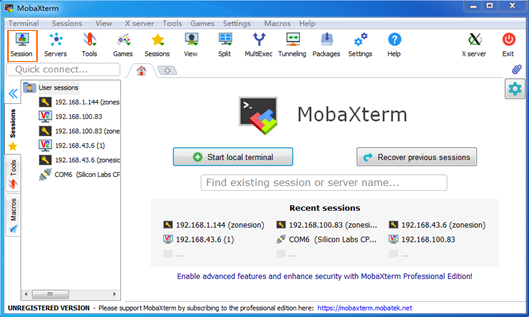
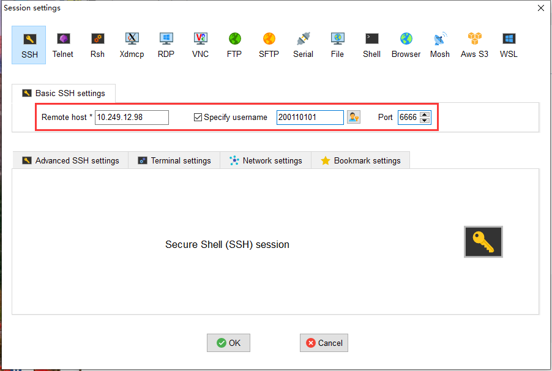
如果你使用的是自己部署的 Linux 环境：
- 主机：你的 Linux IP 地址（可以使用ip addr命令来查询IP地址）
- 端口：默认通常是
22 - 用户名/密码：你自己 Linux 系统的用户名和密码（输入密码是没有显示的，输入完成后敲回车键）
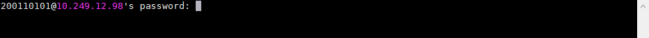
1.2 传文件（SFTP）¶
MobaXterm 登录成功后，左侧通常会自动出现远程目录。
你只需要知道两件事：
- Upload ：把本地文件传到 Linux
- Download ：把 Linux 文件下载到本地
如果你已经在用 VSCode Remote-SSH，那么通常不需要再单独用 SFTP 传文件。
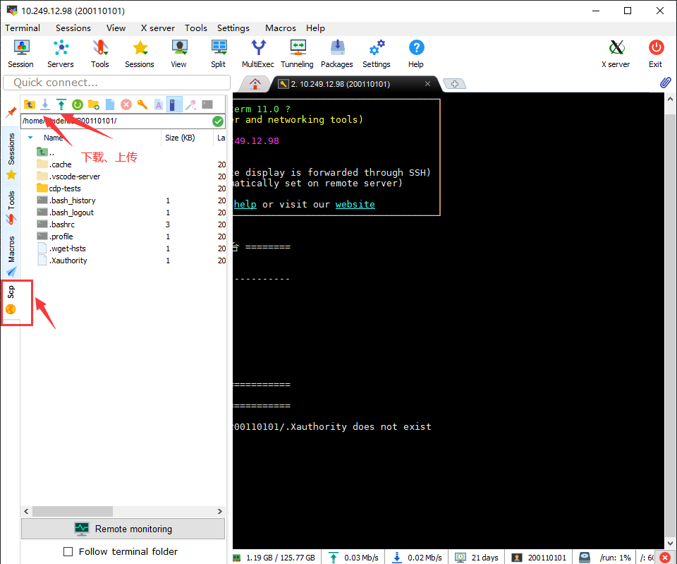
1.3 tmux（推荐）¶
tmux 是终端多路复用工具。你可以把它理解成“ 终端里的标签页 + 保险箱 ”。
它最直接的好处是： 即使网络断了，里面跑着的程序也不会立刻消失 。
常用命令：
tmux # 新建会话
tmux a # 回到上次会话
常用快捷键（先按 Ctrl+b，再按后面的键）：
%：左右分屏"：上下分屏d：暂时挂起当前会话[：进入滚动查看模式
如果你在远程环境里跑 make qemu、长时间测试或训练脚本，推荐放在 tmux 里执行。
2. VSCode（强烈推荐）¶
VSCode 是本课程最推荐的开发工具。原因很简单： 写代码、查文件、开终端、调试、提交 Git，基本都能在一个界面里完成 。
2.1 先装这几个扩展¶
建议安装：
Remote - SSHC/C++Chinese (Simplified)（可选）
安装方法很简单，可以按下面步骤操作：
- 打开 VSCode 左侧的 Extensions（扩展） 面板，或直接按
Ctrl+Shift+X。 - 在搜索框中输入扩展名，例如
Remote - SSH。 - 找到对应扩展后，点击 Install。
- 按同样的方法，再安装
C/C++和Chinese (Simplified)。
如果你已经通过 Remote - SSH 连上了远程环境，还要特别注意安装位置：
Remote - SSH一般装在本地 VSCode 即可；C/C++这类和代码分析、调试相关的扩展，通常需要安装到 远程环境；- 如果按钮上出现
Install in SSH: ...，优先选择安装到远程环境。
这几个扩展分别解决的是：
Remote - SSH：让 VSCode 直接连到远程 Linux；C/C++：提供 C/C++ 代码高亮、跳转、补全和调试支持；Chinese (Simplified)：把 VSCode 界面切换成中文，便于刚开始使用时识别各个按钮和菜单。
2.2 连接远程环境¶
最常见的连接方式，是先点击 VSCode 左侧边栏中的 远程连接按钮（Remote Explorer / Remote-SSH 入口），然后添加并连接一台 SSH 主机。
如果你更习惯直接记命令，也可以把它理解成连接下面这条 SSH 命令对应的远程环境；在首次连接时，通常还需要输入远程主机的登录密码：
ssh 你的学号@10.249.12.98 -p 6666
连上后，建议做这 3 件事：
- 打开实验仓库文件夹
- 打开内置终端
- 在终端里执行
pwd、ls、git status看看环境是否正常
如果你需要更详细的逐步截图说明，请看远程实验平台使用指南。
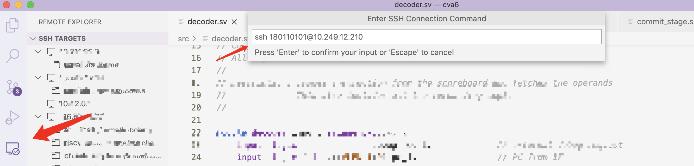
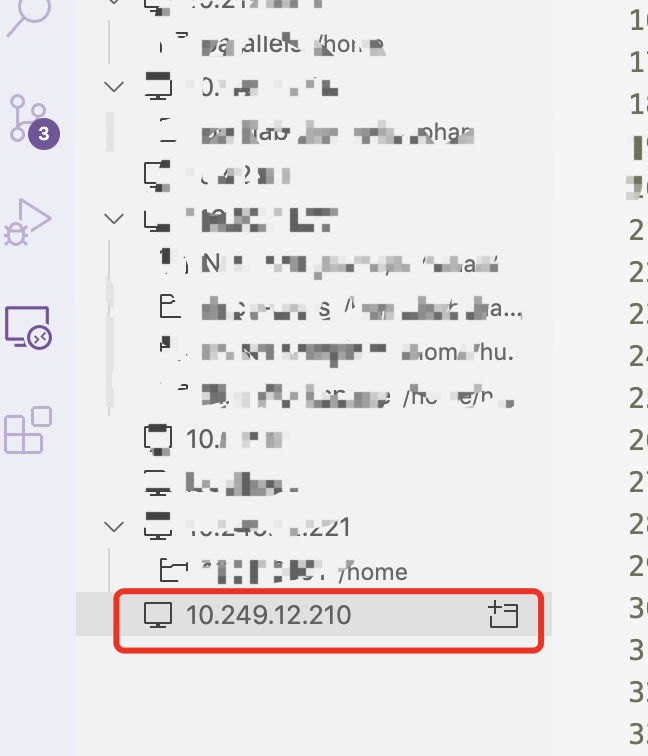
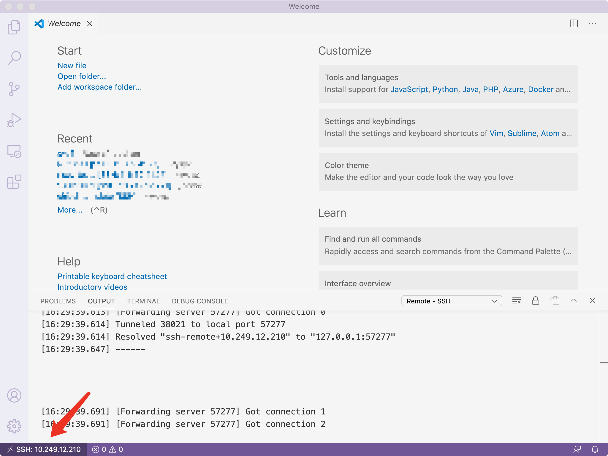
2.3 在 VSCode 里最常用的功能¶
对本课程来说，最常用的是下面这些：
- 资源管理器 ：看文件目录、打开代码
- 全局搜索 ：快速查函数、变量、字符串
- 终端 ：执行
git、make qemu、make grade - Source Control ：图形化提交 Git
如果你刚开始不熟，先记住一句话：
写代码看左边，跑命令看下面，提交 Git 看侧边栏的 Source Control。
3. Git（本课程最重要的工具）¶
Git 是版本控制工具。对本课程来说，它至少有 3 个作用：
- 切换实验分支 ，例如
util、syscall、lock、pgtbl - 保存自己的代码进度 ，防止改坏后回不去
- 同步课程更新 ，把官方仓库的新内容合并到自己的仓库
Git 远程仓库统一使用 HTTPS
HTTPS不需要额外配置 SSH 密钥，更适合第一次接触 Git 的同学。SSH依赖本机密钥配置，初学者更容易遇到Permission denied (publickey)一类问题。
3.1 同步上游仓库¶
当课程组更新了实验代码，或者你要切换到新的实验分支时，会用到这一节。
3.1.1 检查远程仓库设置¶
git remote -v
查看当前仓库配置了哪些远程仓库，以及它们对应的网址。
理想情况下你会看到两个远程仓库：
origin：你自己的仓库upstream：课程提供的官方仓库
3.1.2 完成远程仓库设置¶
如果没有 upstream，执行：
git remote add upstream https://gitee.com/ftutorials/xv6-oslabs-hitsz.git
添加一个名为 upstream 的课程官方仓库。
再执行一次：
git remote -v
再次检查是否添加成功。
3.1.3 同步上游仓库更改¶
在这里，我们以将上游仓库的 syscall 分支同步到本地的 syscall 分支为例。输入以下命令，以获取上游更改、切换到本地 syscall 分支、完成与上游仓库 syscall 分支的合并，并最后上传到自己的远程仓库：
git fetch --all
git checkout syscall
git merge upstream/syscall --no-edit
git push origin
这些命令按顺序的作用分别是：先获取远程更新；再切到本地 syscall 分支；接着把上游仓库的 syscall 分支合并进来；最后把合并后的结果推送到你自己的远程仓库。
检查工作区更改
切换分支之前，请先保存工作区中的修改。如果切换时提示 error: Your local changes to the following files would be overwritten by checkout，请先执行 git status 检查工作区，并先 commit 你的更改。
如果你是第一次切到这个分支，也可能需要：
git checkout --track origin/syscall
这条命令会新建本地 syscall 分支，并让它跟踪远程的 origin/syscall 分支。
初次 checkout？
如果你此前从未 checkout 过该分支，Git 可能会因为 origin 和 upstream 都存在同名分支，而不知道该跟踪哪一个。此时执行上面的 git checkout --track origin/syscall 即可：它会创建本地 syscall 分支，并让它跟踪 origin/syscall。
如果在 git merge upstream/syscall 这一步提示存在冲突，说明你和课程实验在同一个文件的同一个位置都做了修改，Git 无法自动完成合并。如果发生冲突，请参照 3.3.3 合并冲突更改 节处理。
3.2 将代码发布至自己的远程仓库¶
如果你的代码是直接从课程实验仓库 clone 而来，而不是先创建自己的远程仓库、再进行 clone，那么这一节会带你把代码发布到自己的远程仓库中。
这么做有什么好处？
如果你会在不同的电脑上工作，比如实验室电脑、自己的电脑和远程环境之间来回切换，那么远程仓库可以帮助你同步自己的代码进度，也能在误操作时起到额外的备份作用。
3.2.1 设立自己的远程仓库（以 Gitee 为例）¶
登录 Gitee，右上角可以看到一个加号，点击下拉菜单中的“新建仓库”。
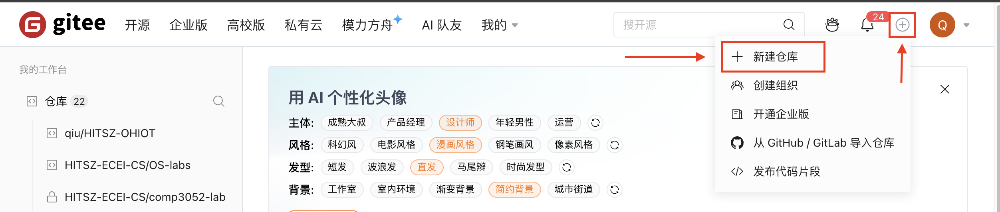
进入后，为自己的仓库设置一个名字。你可以选择公开仓库或者私有仓库；完成后点击“创建”，即可创建一个空的远程仓库。
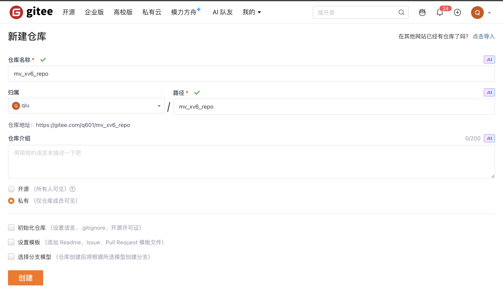
请不要初始化仓库
你的仓库已经在本地，所以这里不要再初始化仓库，也不要选择模板或分支模型。我们的目标是创建一个空的远程仓库，然后把本地仓库推送上去。
仓库创建完成后，会进入仓库主页。请复制仓库的 HTTPS 地址，例如：
https://gitee.com/你的用户名/你的仓库名.git
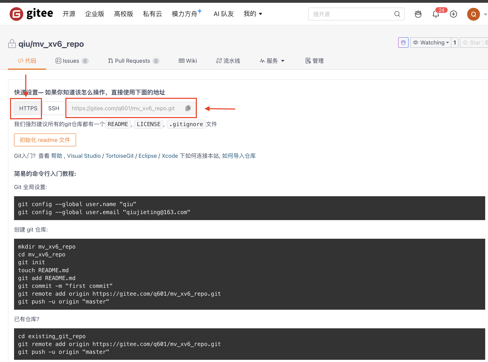
3.2.2 清理本地工作树¶
在命令行中，先执行：
git status
这条命令用于检查当前工作区是否还有未提交的修改。
如果工作树是干净的，就可以直接继续下一步；如果本地还有尚未提交的更改，请先参照 3.3.1.1 Commit 或 3.3.2 使用 VSCode 内建的图形化界面完成操作 先完成一次提交。
3.2.3 修改远程仓库地址并推送¶
在命令行中，输入以下命令：
git remote set-url origin https://gitee.com/你的用户名/你的仓库名.git
这条命令会把当前仓库的 origin 地址改成你自己的远程仓库地址。
将其中的地址替换成你在 3.2.1 中复制下来的 HTTPS 仓库地址。随后，可以输入 git remote -v 检查远程仓库地址是否已经修改成功。
完成后，切换到你想推送的分支，并上传到远程。这里以 syscall 分支为例：
git push -u origin syscall
这条命令会把本地 syscall 分支推送到远程 origin，并建立跟踪关系；以后再推送同一分支时，通常只需要执行 git push。
3.3 常用 git 操作¶
你可以选择使用命令行完成 commit / push / pull / merge 等操作，也可以通过 VSCode 内建的图形化界面完成这些操作。
Git 工作过程如下图所示：
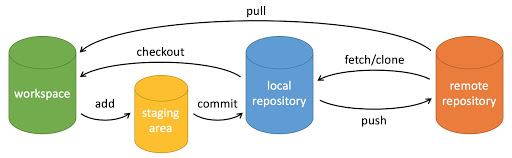
说明：
workspace：工作区staging area：暂存区 / 缓存区local repository：本地仓库remote repository：远程仓库
以下是 Git 的官方说明：
https://git-scm.com/book/zh/v2
什么是 Commit？
你可以把 Commit 看成一个个小的里程碑，它们记录了你的代码进度。每个 Commit 都有独特的哈希值，也会记录是谁、在什么时候提交了这次修改，因此非常适合用来回溯、比较和管理代码版本。
什么是 Push / Pull？
通过 Commit，我们可以在本地完成版本控制；而为了在不同设备之间同步，或者把代码保存到远程仓库中，还需要 Push / Pull。Push 是把本地的提交上传到远程仓库，Pull 则是把远程仓库中的更新同步到本地。
什么是 Merge？
当两个分支都发生了修改，或者你要把上游仓库的更新合并进本地分支时，就会用到 Merge。如果两边改动互不冲突，Git 往往能自动合并；如果冲突了，就需要你手动决定最终保留哪一版。
3.3.1 使用命令行完成操作¶
3.3.1.1 Commit¶
git add 你要保存更改的文件们
# 或者，git add --all 以添加所有更改
git commit -m "本次 Commit 你做了什么"
git add：把修改加入暂存区，告诉 Git“这些内容要进入下一次提交”；例如git add .表示把当前文件夹及其子文件夹中的修改一起加入暂存区。git commit -m ...：把暂存区中的修改保存成一次提交，并写上这次提交的说明。
建议每次 Commit 都使用有效的提交信息，以便自己后续追踪代码进度。
3.3.1.2 push¶
push 可以将自己的进度同步到远程仓库。
git push
这条命令会把本地已经提交的内容推送到当前跟踪的远程分支。
3.3.1.3 pull¶
pull 可以将远程仓库的进度同步到本地。
git pull
这条命令会把远程分支的最新更新拉到本地，并尝试自动合并。
3.3.1.4 merge¶
merge 一般用于分支之间的合并，也可以用于把上游远程分支合并到本地分支。
git checkout 你想合并的本地分支
git merge 远程仓库名称/分支名称
git checkout ...：先切到你准备接收合并结果的本地分支；git merge ...：再把另一个分支的修改合并进当前分支。
仓库权限
你可以从公共仓库拉取，但只能推送到自己有权限的仓库。如果当前 origin 还不是你自己的远程仓库，请先参照 3.2 完成设置。
3.3.2 使用 VSCode 内建的图形化界面完成操作¶
VSCode 的版本控制界面在左侧边栏中。界面下方会显示当前所处分支，点击后可以切换分支；右侧的圆形双箭头表示与远程仓库同步。右侧 Changes 显示工作区中被修改的文件，而 Staged 则显示已经准备加入下一次 Commit 的修改。下图中，就有两个文件处于被修改状态：
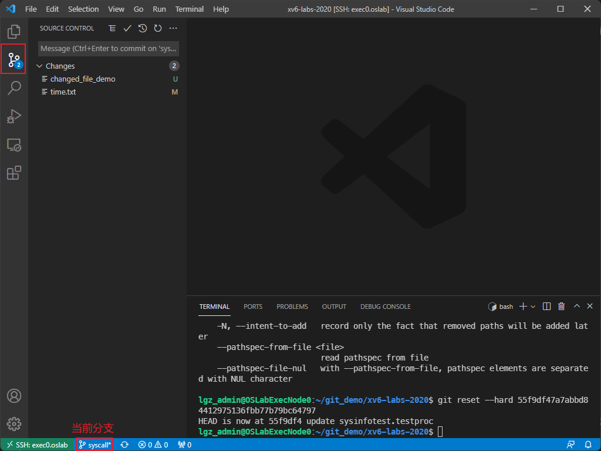
鼠标移到 Changes 或下面列出的文件名上，点击右侧的 +，即可把文件加入 Staged 区：
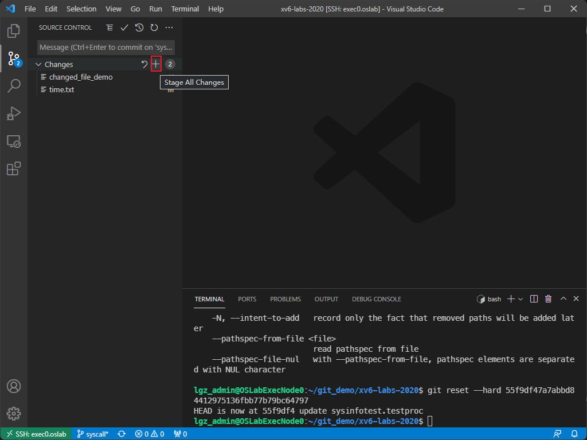
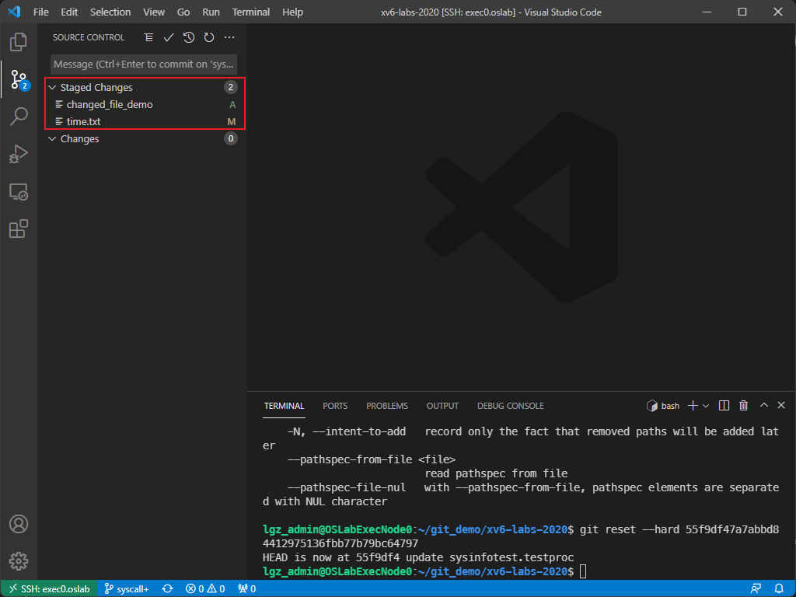
此时，这些文件已经准备好被 Commit。在上方输入框中填写提交信息，并点击提交按钮即可：
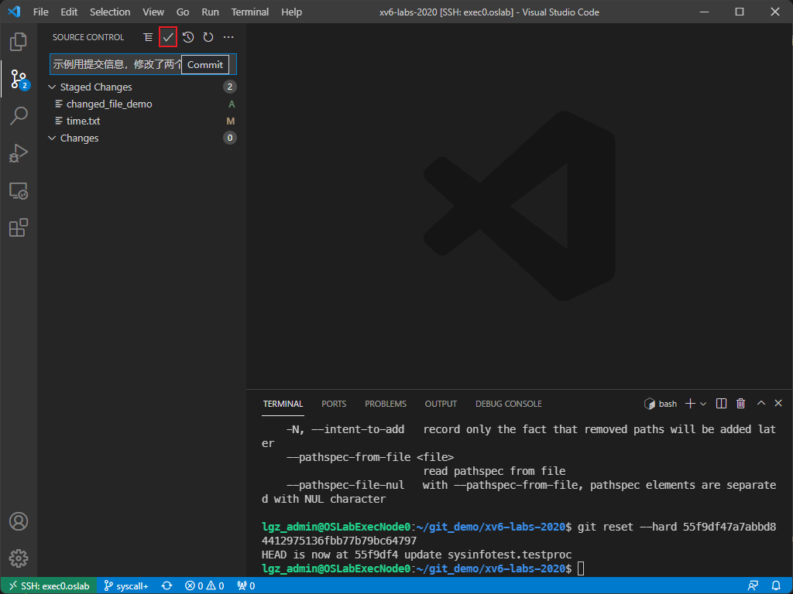
如果已经绑定远程仓库，那么在界面下方的同步按钮处，通常可以看到有多少提交需要拉取、多少提交需要推送。点击这个按钮，或者点击界面上方的 Sync Changes，就可以完成同步：
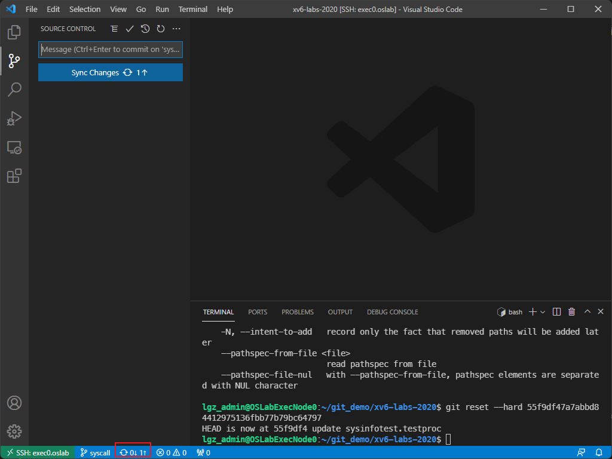
这样，你的代码就保存到远程仓库中了。
仓库权限
你可以从公共仓库拉取，但只能推送到自己有权限的仓库。如果当前 origin 还不是你自己的远程仓库，请先参照 3.2 完成设置。
3.3.3 合并冲突更改¶
如果有两个 Commit 的内容出现冲突，那么在 merge 时就可能需要手动合并冲突。一般来说，推荐优先在 VSCode 中处理。例如，下图中本地 syscall 的修改与远程 upstream/origin 的修改发生了冲突：
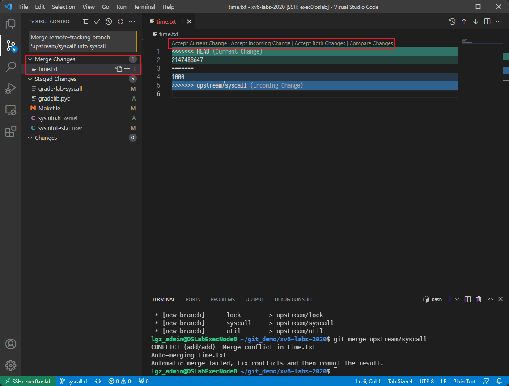
从左侧红框中的 Merge Changes 区域可以看到发生冲突的文件。点开文件后，右侧会出现冲突视图：上方通常表示当前（本地）的修改，下方通常表示远程的修改。根据实际情况，可以从上方几个按钮中选择合适的那个。
例如，如果你想保留自己的修改、丢弃远程那一侧的修改，通常就选择 Accept Current Change。完成后，像平时提交代码一样，将处理后的文件加入 Stage，再执行 Commit 和 Push，就完成了这次冲突合并。
如果你更习惯使用命令行，也可以手动打开冲突文件，找到 <<<<<<<、=======、>>>>>>> 这些冲突标记，整理成最终版本后，执行：
git add 冲突文件
git commit -m "解决合并冲突"
这里的含义是：先把已经处理好的冲突文件重新加入暂存区，再提交一次“冲突已解决”的新提交。
如果你只是想放弃这次合并，也可以执行：
git merge --abort
这条命令会尽量放弃当前这次合并，并把仓库恢复到合并开始前的状态。
3.4 HTTPS 和 SSH 有什么区别？¶
Git 远程仓库常见有两种写法：
https://gitee.com/你的用户名/你的仓库名.git
git@gitee.com:你的用户名/你的仓库名.git
它们的区别可以简单理解为：
HTTPS：直接使用账号密码、令牌或网页授权进行认证， 本课程统一推荐这种方式 。SSH：依赖本机 SSH 密钥配置；如果密钥、账户或权限没有配好，就容易报错。
如果你只是想顺利完成实验，建议统一使用 HTTPS。
如果你现在的 origin 是 SSH 地址，可以改成 HTTPS：
git remote set-url origin https://gitee.com/你的用户名/你的仓库名.git
git remote -v
git remote set-url origin ...：把origin从 SSH 地址改成 HTTPS 地址；git remote -v：再次检查远程仓库地址是否已经修改成功。
选读
如果你已经熟悉 SSH 密钥、公钥绑定和远程认证流程，也可以继续使用 SSH；但这不是本课程的统一要求。
4. 一句话建议¶
如果你只记住 4 件事，就记住这 4 件：
- 写代码主要用 VSCode
- 每次做完一点就
git commit - 切换分支前先
git status - 不能 push 时先检查
git remote -v，优先使用 HTTPS